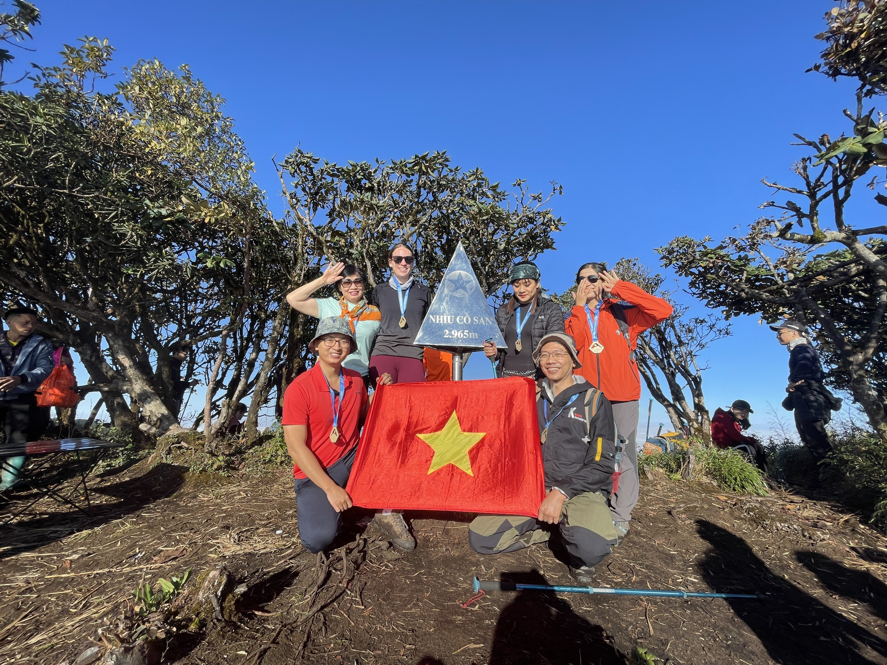
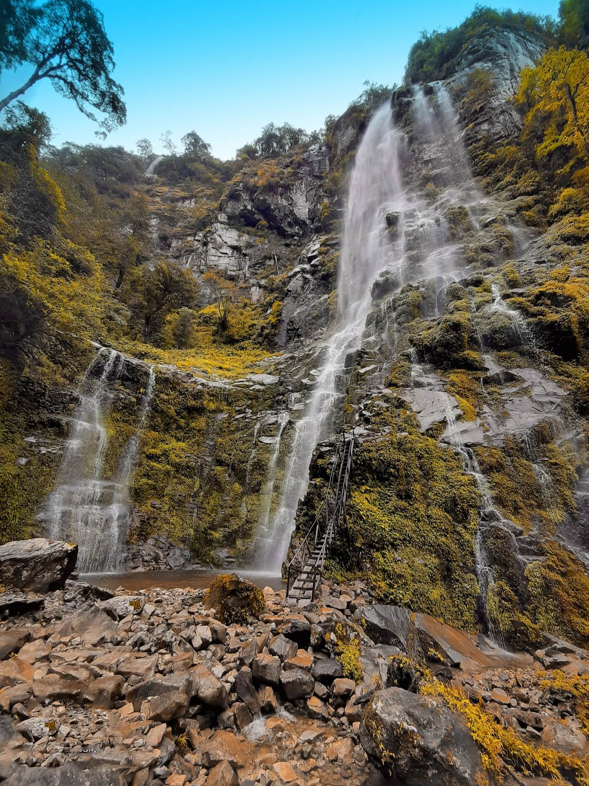
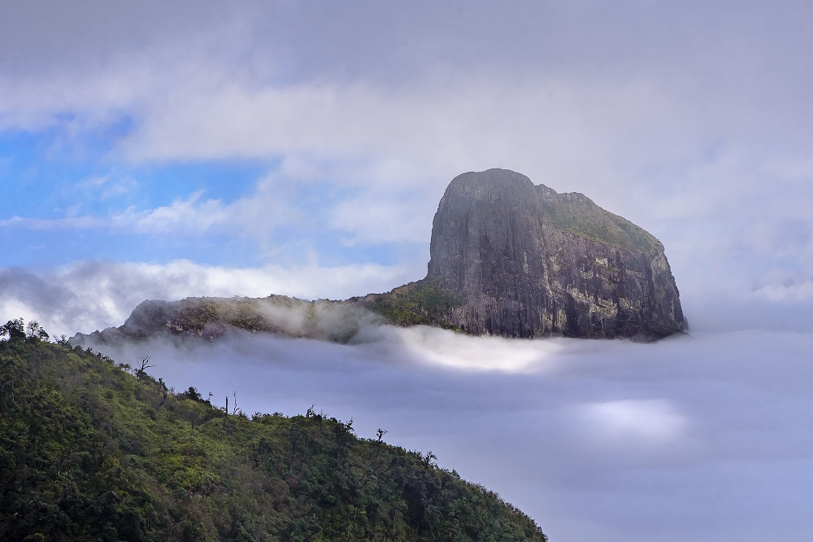

Nhìu Cồ San là một vùng núi cao thuộc huyện Bát Xát, tỉnh Lào Cai. Đây là một khối núi có địa hình phức tạp và nổi tiếng của khu vực, với đỉnh cao nhất đạt khoảng 2.965m so với mực nước biển.
Hành trình chinh phục Nhìu Cồ San thu hút người yêu trekking bởi sự đa dạng của địa hình: từ những con dốc dài thẳng đứng, rừng già nguyên sinh âm u cho đến những thảo nguyên bát ngát trên đỉnh và biển mây huyền diệu vào buổi sáng sớm. Đây cũng là nơi cư trú của nhiều dân tộc thiểu số với nền văn hoá đặc sắc.
Tour ghép thường khởi hành vào cuối tuần. Quý khách vui lòng liên hệ Hidden Path để xác nhận lịch cụ thể từng tuần.
Tour riêng có thể tổ chức bất kì ngày nào trong tuần theo yêu cầu với chi phí khác.
Đặc điểm nổi bật
Bao gồm & Không bao gồm
✓ Bao gồm
- Xe đưa đón Hà Nội – Lào Cai – Hà Nội
- Hướng dẫn viên chuyên nghiệp
- Porter địa phương hỗ trợ 1:1
- Toàn bộ bữa ăn trong hành trình
- Lều ngủ, túi ngủ, thảm nằm
- Gậy leo núi, nước uống
- Huy chương chinh phục đỉnh
✗ Không bao gồm
- Chi phí cá nhân phát sinh
- Đồ ăn vặt, nước uống riêng
- Trang phục và giày leo núi
- Bảo hiểm du lịch
- Chi phí phát sinh do thời tiết
Lịch trình tour chinh phục Nhìu Cồ San
19h00: Xe khởi hành từ Hà Nội, di chuyển thẳng lên Bát Xát, Lào Cai. Quý khách nghỉ ngơi và dưỡng sức trên xe giường nằm để chuẩn bị cho hành trình trekking ngày hôm sau.
Bữa ăn: Không.
Nghỉ đêm: Trên xe giường nằm.
06h00: Xe tới Bát Xát. Đoàn vệ sinh cá nhân, ăn sáng nạp năng lượng và chuẩn bị tư trang hành lý sẵn sàng.
07h30: Xuất phát trekking từ điểm bắt đầu. Chặng đường đầu tiên, quý khách sẽ đi ngang qua các bản làng dân tộc mang đậm bản sắc văn hoá, trước khi tiến sâu vào những tán rừng già rậm rạp và nguyên sơ.
12h00: Dừng chân nghỉ ngơi, dùng bữa trưa dã chiến giữa không gian thiên nhiên hoang dã của núi rừng Tây Bắc.
14h30: Tiếp tục leo lên. Địa hình giai đoạn này bắt đầu nâng độ khó với những con dốc dựng đứng, đòi hỏi sức bền và sự khéo léo.
16h30: Đến điểm cắm trại an toàn trên lưng chừng núi. Cả đoàn cùng phụ giúp dựng lều, sắp xếp đồ đạc và nghỉ ngơi.
18h30: Ăn tối quanh bếp lửa ấm áp. Thưởng thức ánh hoàng hôn dần buông và ngắm nhìn bầu trời đêm đầy sao lấp lánh giữa màn đêm tĩnh lặng.
Bữa ăn: Sáng, Trưa, Tối.
Nghỉ đêm: Lều trại.
05h00: Thức dậy sớm, hít thở không khí trong lành, di chuyển lên đỉnh ngắm bình minh và chiêm ngưỡng biển mây huyền ảo trải dài vô tận.
05h30: Chạm đỉnh Nhìu Cồ San ~2.965m! Đứng trên đỉnh núi vinh quang, quý khách chụp ảnh check-in đánh dấu cột mốc và nhận huy chương chinh phục đầy tự hào.
07h00: Quay lại khu vực trại, dùng bữa sáng nóng hổi và bắt đầu thu dọn lều trại, vệ sinh khu vực xung quanh.
08h00: Bắt đầu hành trình xuống núi theo một cung đường khác, tiếp tục khám phá sự đa dạng của hệ sinh thái nơi đây.
12h00: Về tới chân núi an toàn. Đoàn nghỉ ngơi và ăn trưa mừng thành công tại bản địa phương.
14h00: Lên xe giường nằm khởi hành trở về Hà Nội.
21h00: Về tới Hà Nội. Trưởng đoàn chào tạm biệt, kết thúc hành trình chinh phục đỉnh Nhìu Cồ San thành công tốt đẹp.
Bữa ăn: Sáng, Trưa.
Độ khó
Tour leo núi Nhìu Cồ San được đánh giá ở mức Thách thức – địa hình phức tạp, nhiều đoạn dốc đứng và bùn lầy. Phù hợp với người đã từng tham gia ít nhất 1 tour leo núi 2N1Đ và có sức khoẻ tốt.
Chuẩn bị trước tour
Thư viện ảnh


